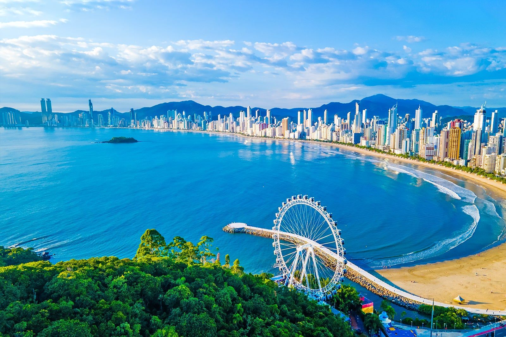
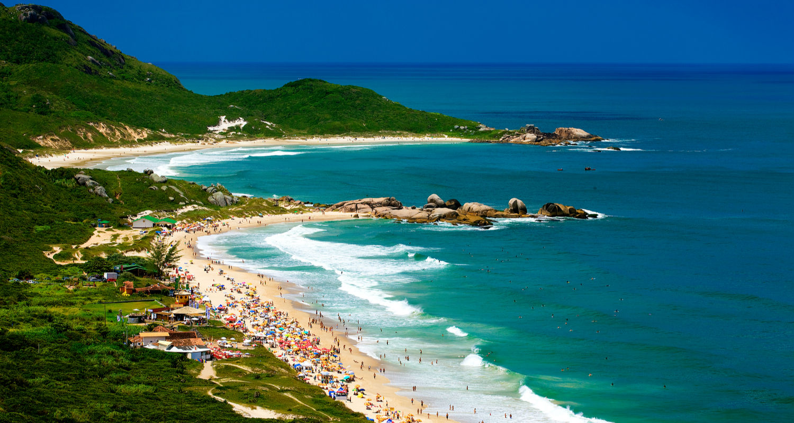
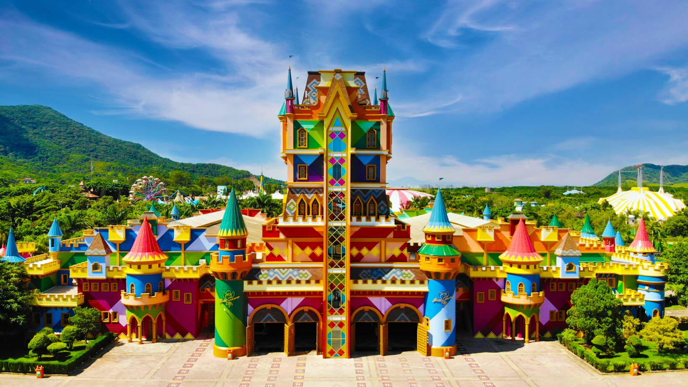

Santa Catarina
Um dos destinos mais bonitos do Brasil
Informações Gerais
Estado: Santa Catarina
População: Aproximadamente 8,2 milhões
Santa Catarina é um dos estados mais bonitos do Brasil, conhecido por suas praias,
cidades organizadas e forte influência europeia (principalmente alemã e italiana).
É um destino que mistura natureza, gastronomia e cultura.

Balneário Camboriú
Ver mais
Balneário Camboriú é uma das cidades mais famosas de Santa Catarina, conhecida por suas praias, vida noturna e arranha-céus. É um destino popular para turistas que buscam diversão e entretenimento.

Florianópolis
Ver mais
Florianópolis é a capital de Santa Catarina e é famosa por suas praias paradisíacas, trilhas e vida noturna. A cidade é um destino ideal para quem busca contato com a natureza e atividades ao ar livre.

Beto Carrero World
Ver mais
O Beto Carrero World é o maior parque temático da América Latina, localizado em Santa Catarina. Ele oferece diversas atrações, como montanhas-russas, shows e áreas temáticas, sendo um dos principais destinos turísticos do Brasil.
Comidas Regionais
Santa Catarina é conhecida por sua rica tradição culinária, que mistura influências europeias e brasileiras. A gastronomia da região destaca-se por pratos feitos com ingredientes frescos e locais, como o famoso "frango à passarinho" e os deliciosos "churros".
Festas e Eventos
Santa Catarina é conhecida por suas festas tradicionais, como a Oktoberfest em Blumenau, que celebra a cultura alemã com muita música, dança e cerveja. Além disso, o Carnaval de Florianópolis é um dos mais animados do país, atraindo turistas de todas as partes para curtir os desfiles e blocos de rua.
Curiosidades
Santa Catarina é conhecida por suas belas paisagens e rica cultura. A região é famosa por sua produção de vinhos, especialmente os tintos, e por sua tradição de artesanato e artes marciais, e pelo fato de, em algumas regiões serranas, poder ocorrer neve no inverno, algo raro no Brasil.